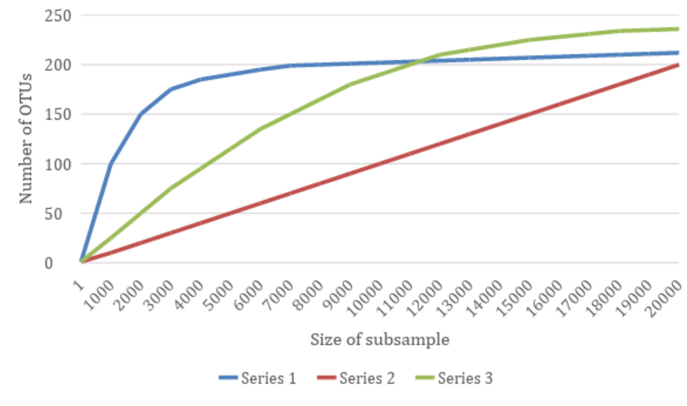

Chapter 12 Sequencing depth evaluation: rarefaction plot

The diversity detected depends, to an extent, on the sampling depth (i.e. an incompletely sampled community will appear less diverse than a fully sampled community). Therefore, to compare the diversity among samples of different sizes, we need to account for this. We can do this by rarefaction, or re-sampling, from the data. Equally sized subsamples are directly comparable among different samples. In addition, if we sample progressively smaller subsamples from a sample, we draw a curve of estimated alpha diversity. The shape of this curve is informative. If the curve plateaus, then increased sampling depth will not increase the estimate of alpha diversity (the community is fully sampled).
 Example rarefaction curve: We can see that Series 1 plateaus at ~7,000 sequences and Series 3 plateaus at ~18,000 sequences whilst Series 2 has not started to plateau.
Given an abundance table (and a phylogenetic tree for calculating phylogenetic distance), we can plot the rarefaction curve using different alpha-diversity metrics. Here, we will use diversity metircs (observed variants, Simpson, Shannon, Faith’s PD) as well as an evenness metric (Simpson’ evenness). You may want to exclude --p-metrics faith_pd for markers such as ITS.
qiime diversity alpha-rarefaction --i-table table-dada2.qza \
--i-phylogeny rooted-tree.qza \
# Min and max depth for the plot
--p-min-depth 5000 \
--p-max-depth 130000 \
# Evaluating diversity every 75 seqs depth
--p-steps 75 \
# Using average from 55 iterations for the diversity count
--p-iterations 55 \
--m-metadata-file metadata.file.txt \
--p-metrics simpson_e \
--p-metrics simpson \
--p-metrics shannon \
--p-metrics observed_otus \
--p-metrics faith_pd \
--o-visualization rarefaction-curve.qzvThe command will take approx. 10 min; the result is a visualisation artifact. From the loaded file, you can select the metric to visualize as well as the grouping (there is one non-numerical column in the metadata file).
The visualization will have two plots. The top plot is an alpha rarefaction plot and is primarily used to determine if the richness of the samples has been fully observed or sequenced. If the lines in the plot appear to “level out” (i.e., approach a slope of zero) at some sampling depth along the xaxis, that suggests that collecting additional sequences beyond that sampling depth would not likely result in the observation of additional features. If the lines in a plot don’t level out, this may be because the richness of the samples hasn’t been fully observed yet (because too few sequences were collected), or it could be an indicator that a lot of sequencing errors remain in the data (which is being mistaken for novel diversity).
The bottom plot in this visualization is important when grouping samples by metadata. It illustrates the number of samples that remain in each group when the feature table is rarefied to each sampling depth. If a given sampling depth (depth D) is larger than the total frequency of sample S (i.e., the number of sequences that were obtained for sample S), it is not possible to compute the diversity metric for sample S at sampling depth D. If many of the samples in a group have lower total frequencies than D, the average diversity presented for that group at D in the top plot will be unreliable because it will have been computed on relatively few samples. When grouping samples by metadata, it is therefore essential to look at the bottom plot to ensure that the data presented in the top plot is reliable.
Choose a rarefaction threshold for the normalisation step, is ultimately identifying the best tradeoff between losing sequencing depth within few samples or loosing entire samples. The best choice usually depends on the experimental design, if you have sample replicates you may lose a few of these without losing statistical power for the analysis, if not it may be choosing a lower threshold (and therefore loosing sequencing for the best sequenced samples you have …)
Questions:
- Are any samples not fully sequenced?
- Choose a sampling depth (rarefaction threshold) to use for the alpha- and beta-diversity analysis, you can discuss with a class-mate.